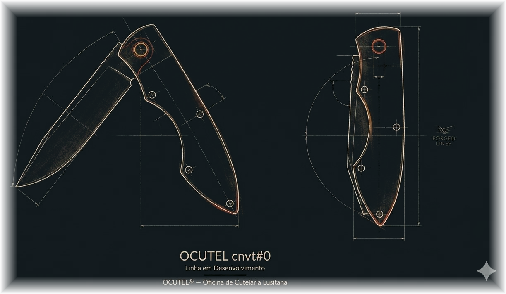

Oficina de Cutelaria Lusitana
OCUTEL®
Cutelaria tradicional de autor.
Peças feitas devagar, uma de cada vez, a partir da matéria, do desenho e da mão. Uma oficina portuguesa, não uma linha industrial.
A oficina
Aço, madeira, couro,
fogo e ferramentas.
O tempo certo de cada gesto.
Um lugar para construir, aprender e, muitas vezes, oferecer.
A OCUTEL® não nasce de uma linha de produção. Nasce de uma bancada, de ferramentas e de um trabalho feito uma peça de cada vez.
Há tentativa, desbaste, erro e correção. A lâmina, como quem a faz, forma-se por pressão, calor e paciência. Trabalha-se o aço, mas trabalha-se também a forma de estar diante dele: respeitar o tempo da matéria e aceitar que a beleza não nasce da pressa.
É uma cutelaria de autor — sóbria, atenta ao detalhe, sem promessa fácil. Um espaço de aprendizagem contínua, onde aquilo que se faz procura estar alinhado com aquilo em que se acredita.
O processo
Da matéria bruta à forma.
Cada peça começa na matéria bruta e avança por etapas lentas, até encontrar equilíbrio entre utilidade, desenho e presença. Nada nasce acabado.
Matéria
Escolher o aço e a madeira. Compreender o que cada um pode e não pode dar.
Fogo
A forja. Calor e esforço que dão início à forma, ainda longe de estar pronta.
Forma
Desbastar o excesso. Procurar o equilíbrio entre força e delicadeza.
Fio
Têmpera e afiação. O ponto onde a peça ganha utilidade e verdade.
Tempo
Acabamento e paciência. O silêncio do processo, até a peça ter identidade.
Peças
Produção artesanal e limitada.
Não industrial.
Não loja online.
Peças únicas ou de pequena série, feitas à mão, uma de cada vez.
Não existe catálogo nem carrinho de compras. Cada peça pertence a um caminho maior do que a simples produção de um objeto, e muitas vezes ganha sentido quando encontra destino noutra pessoa.
Algumas peças serão apresentadas à medida que estiverem prontas, incluindo a linha em desenvolvimento OCUTEL cnvt. A primeira navalha de desenho próprio está em estudo — antes do aço, vem o desenho.

O caminho
Não procuro a perfeição. Procuro fazer melhor a cada tentativa.
O trabalho manual é, antes de tudo, um espaço de disciplina e de aperfeiçoamento. Obriga a corrigir, a aceitar imperfeições e a respeitar a matéria. Por isso a OCUTEL® é mais do que aço: é também método, intenção e a procura de coerência entre aquilo que se pensa, se diz e se faz.
Trabalha-se a matéria e, no mesmo gesto, trabalha-se quem a trabalha. Desbastar o excesso, construir a partir do erro, respeitar o tempo de cada etapa — é assim que uma peça ganha forma, e é assim que se aprende. Fica o que foi feito com verdade; e fica também o caminho de quem o fez.
Transformar matéria. E, com ela, continuar a aperfeiçoar quem a trabalha.
Contacto
Falar sobre uma peça ou sobre o trabalho.
Pedidos e conversa por email ou Instagram. Sem pressa, à medida da oficina.